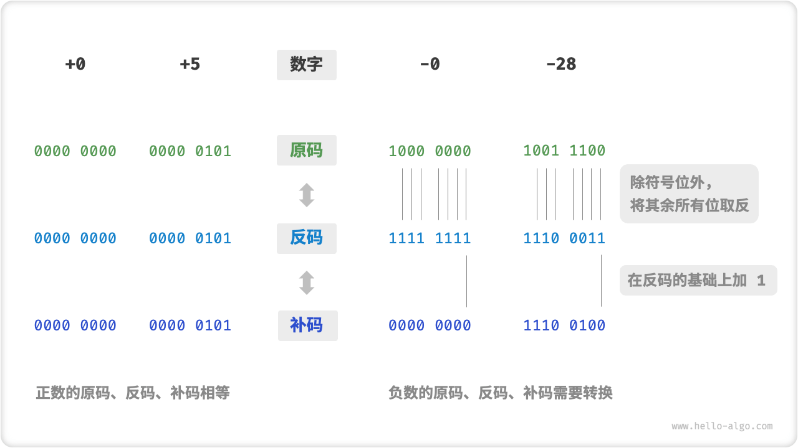
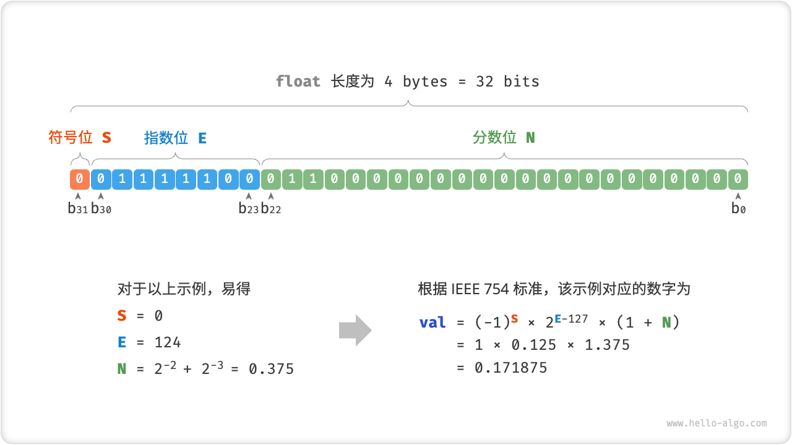

数字编码 *
Note
在本书中，标题带有的 * 符号的是选读章节。如果你时间有限或感到理解困难，可以先跳过，等学完必读章节后再单独攻克。
整数编码
在上一节的表格中我们发现，所有整数类型能够表示的负数都比正数多一个，例如 byte 的取值范围是 \([-128, 127]\) 。这个现象比较反直觉，它的内在原因涉及到原码、反码、补码的相关知识。
首先需要指出，数字是以“补码”的形式存储在计算机中的。在分析这样做的原因之前，我们首先给出三者的定义。
- 原码：我们将数字的二进制表示的最高位视为符号位，其中 \(0\) 表示正数，\(1\) 表示负数，其余位表示数字的值。
- 反码：正数的反码与其原码相同，负数的反码是对其原码除符号位外的所有位取反。
- 补码：正数的补码与其原码相同，负数的补码是在其反码的基础上加 \(1\) 。
下图展示了原码、反码和补码之间的转换方法。

「原码 true form」虽然最直观，但存在一些局限性。一方面，负数的原码不能直接用于运算。例如在原码下计算 \(1 + (-2)\) ，得到的结果是 \(-3\) ，这显然是不对的。
为了解决此问题，计算机引入了「反码 1's complement code」。如果我们先将原码转换为反码，并在反码下计算 \(1 + (-2)\) ，最后将结果从反码转化回原码，则可得到正确结果 \(-1\) 。
另一方面，数字零的原码有 \(+0\) 和 \(-0\) 两种表示方式。这意味着数字零对应着两个不同的二进制编码，其可能会带来歧义。比如在条件判断中，如果没有区分正零和负零，则可能会导致判断结果出错。而如果我们想要处理正零和负零歧义，则需要引入额外的判断操作，其可能会降低计算机的运算效率。
与原码一样，反码也存在正负零歧义问题，因此计算机进一步引入了「补码 2's complement code」。我们先来观察一下负零的原码、反码、补码的转换过程：
在负零的反码基础上加 \(1\) 会产生进位，但 byte 类型的长度只有 8 位，因此溢出到第 9 位的 \(1\) 会被舍弃。也就是说，负零的补码为 \(0000 \; 0000\) ，与正零的补码相同。这意味着在补码表示中只存在一个零，正负零歧义从而得到解决。
还剩余最后一个疑惑：byte 类型的取值范围是 \([-128, 127]\) ，多出来的一个负数 \(-128\) 是如何得到的呢？我们注意到，区间 \([-127, +127]\) 内的所有整数都有对应的原码、反码和补码，并且原码和补码之间是可以互相转换的。
然而，补码 \(1000 \; 0000\) 是一个例外，它并没有对应的原码。根据转换方法，我们得到该补码的原码为 \(0000 \; 0000\) 。这显然是矛盾的，因为该原码表示数字 \(0\) ，它的补码应该是自身。计算机规定这个特殊的补码 \(1000 \; 0000\) 代表 \(-128\) 。实际上，\((-1) + (-127)\) 在补码下的计算结果就是 \(-128\) 。
你可能已经发现，上述的所有计算都是加法运算。这暗示着一个重要事实：计算机内部的硬件电路主要是基于加法运算设计的。这是因为加法运算相对于其他运算（比如乘法、除法和减法）来说，硬件实现起来更简单，更容易进行并行化处理，运算速度更快。
请注意，这并不意味着计算机只能做加法。通过将加法与一些基本逻辑运算结合，计算机能够实现各种其他的数学运算。例如，计算减法 \(a - b\) 可以转换为计算加法 \(a + (-b)\) ；计算乘法和除法可以转换为计算多次加法或减法。
现在我们可以总结出计算机使用补码的原因：基于补码表示，计算机可以用同样的电路和操作来处理正数和负数的加法，不需要设计特殊的硬件电路来处理减法，并且无须特别处理正负零的歧义问题。这大大简化了硬件设计，提高了运算效率。
补码的设计非常精妙，因篇幅关系我们就先介绍到这里，建议有兴趣的读者进一步深度了解。
浮点数编码
细心的你可能会发现：int 和 float 长度相同，都是 4 bytes ，但为什么 float 的取值范围远大于 int ？这非常反直觉，因为按理说 float 需要表示小数，取值范围应该变小才对。
实际上，这是因为浮点数 float 采用了不同的表示方式。记一个 32-bit 长度的二进制数为：
根据 IEEE 754 标准，32-bit 长度的 float 由以下三个部分构成。
- 符号位 \(\mathrm{S}\) ：占 1 bit ，对应 \(b_{31}\) 。
- 指数位 \(\mathrm{E}\) ：占 8 bits ，对应 \(b_{30} b_{29} \ldots b_{23}\) 。
- 分数位 \(\mathrm{N}\) ：占 23 bits ，对应 \(b_{22} b_{21} \ldots b_0\) 。
二进制数 float 对应的值的计算方法：
转化到十进制下的计算公式：
其中各项的取值范围：

观察上图，给定一个示例数据 \(\mathrm{S} = 0\) ， \(\mathrm{E} = 124\) ，\(\mathrm{N} = 2^{-2} + 2^{-3} = 0.375\) ，则有：
现在我们可以回答最初的问题：float 的表示方式包含指数位，导致其取值范围远大于 int 。根据以上计算，float 可表示的最大正数为 \(2^{254 - 127} \times (2 - 2^{-23}) \approx 3.4 \times 10^{38}\) ，切换符号位便可得到最小负数。
尽管浮点数 float 扩展了取值范围，但其副作用是牺牲了精度。整数类型 int 将全部 32 位用于表示数字，数字是均匀分布的；而由于指数位的存在，浮点数 float 的数值越大，相邻两个数字之间的差值就会趋向越大。
如下表所示，指数位 \(E = 0\) 和 \(E = 255\) 具有特殊含义，用于表示零、无穷大、\(\mathrm{NaN}\) 等。
表
| 指数位 E | 分数位 \(\mathrm{N} = 0\) | 分数位 \(\mathrm{N} \ne 0\) | 计算公式 |
|---|---|---|---|
| \(0\) | \(\pm 0\) | 次正规数 | \((-1)^{\mathrm{S}} \times 2^{-126} \times (0.\mathrm{N})\) |
| \(1, 2, \dots, 254\) | 正规数 | 正规数 | \((-1)^{\mathrm{S}} \times 2^{(\mathrm{E} -127)} \times (1.\mathrm{N})\) |
| \(255\) | \(\pm \infty\) | \(\mathrm{NaN}\) |
值得说明的是，次正规数显著提升了浮点数的精度。最小正正规数为 \(2^{-126}\) ，最小正次正规数为 \(2^{-126} \times 2^{-23}\) 。
双精度 double 也采用类似 float 的表示方法，在此不做赘述。